Philothamnus
The genus Philothamnus (family Colubridae) has 24 living species in SnakeList (none venomous), recorded in 41 countries.
- 24living species
- 24non-venomous
- 41countries
About the genus
A genus of the family Colubridae (colubrids).
Species
Showing 24 species
- No photo yetAnnobon Wood SnakePhilothamnus girardi
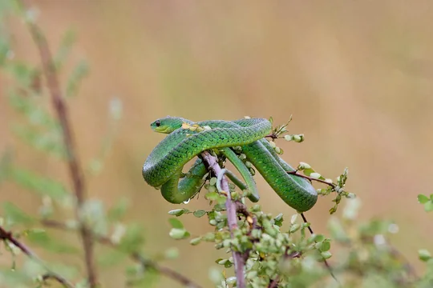
Battersby's Green SnakePhilothamnus battersbyi Bequaert's Green SnakePhilothamnus bequaerti
Bequaert's Green SnakePhilothamnus bequaerti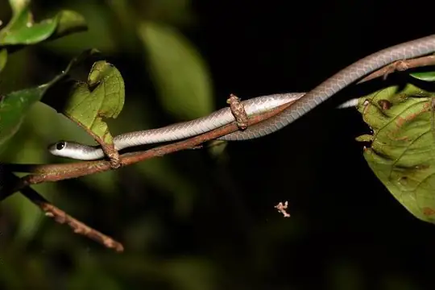
Brown Bush SnakePhilothamnus brunneus Emerald Green SnakePhilothamnus heterodermus
Emerald Green SnakePhilothamnus heterodermus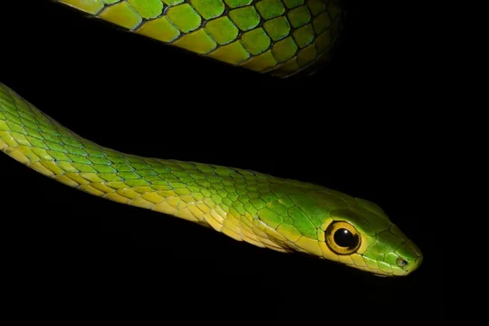
Green Bush SnakePhilothamnus nitidus Green Water SnakePhilothamnus hoplogaster
Green Water SnakePhilothamnus hoplogaster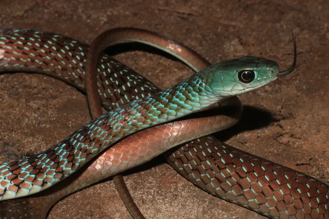
Hughes' Green SnakePhilothamnus hughesi Irregular Green SnakePhilothamnus irregularis
Irregular Green SnakePhilothamnus irregularis Mayombe Bush SnakePhilothamnus mayombensis
Mayombe Bush SnakePhilothamnus mayombensis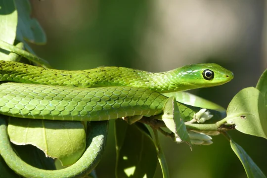
Natal Green SnakePhilothamnus natalensis Ornate Green SnakePhilothamnus ornatus
Ornate Green SnakePhilothamnus ornatus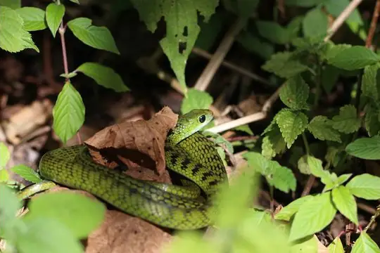
Rwanda Forest Green SnakePhilothamnus ruandae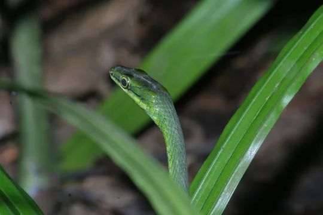
Sao Tome Wood SnakePhilothamnus thomensis Slender Green SnakePhilothamnus heterolepidotus
Slender Green SnakePhilothamnus heterolepidotus Spotted Bush SnakePhilothamnus semivariegatus
Spotted Bush SnakePhilothamnus semivariegatus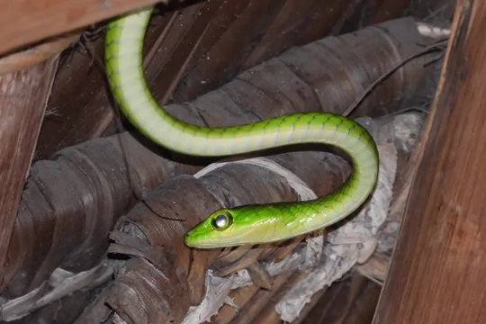
Spotted Green SnakePhilothamnus punctatus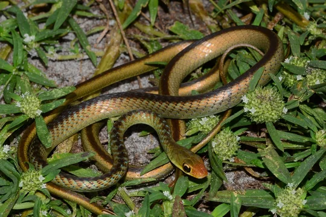
Striped Wood SnakePhilothamnus dorsalis Thirteen-scaled Green SnakePhilothamnus carinatus
Thirteen-scaled Green SnakePhilothamnus carinatus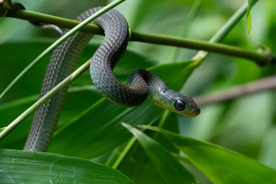
Usambara Green SnakePhilothamnus macrops Western Green SnakePhilothamnus angolensis
Western Green SnakePhilothamnus angolensis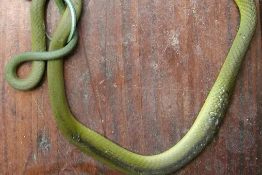
Western Natal Green SnakePhilothamnus occidentalis- No photo yetPhilothamnus belli
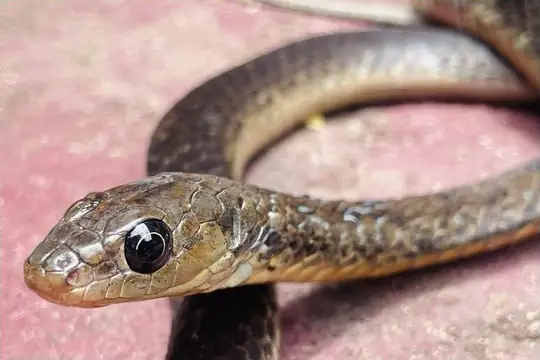
Philothamnus pobeguini
No snakes in Philothamnus match.
About the genus Philothamnus
- Distribution: living species recorded in 41 countries, on one continent: Africa.
- Family: Colubridae.
- Countries and territories: Angola, Benin, Botswana, Burkina Faso, Burundi, Cameroon, Central African Republic, Chad, Democratic Republic of the Congo, Equatorial Guinea, Eritrea, Eswatini, Ethiopia, Gabon, Gambia, Ghana, Guinea, Guinea-Bissau, Ivory Coast, Kenya, Liberia, Malawi, Mali, Mozambique, Namibia, Niger, Nigeria, Republic of the Congo, Rwanda, Sao Tome and Principe, Senegal, Sierra Leone, Somalia, South Africa, South Sudan, Sudan, Tanzania, Togo, Uganda, Zambia and 1 more.
Compare its species
Its living species side by side. Lengths come only from SnakeList’s reviewed, sourced accounts; the others are left blank rather than guessed.
| Species | Venom | Recorded in | Adult length (reviewed accounts) |
|---|---|---|---|
| Annobon Wood Snake Philothamnus girardi | Non-venomous | 2 countries (Africa) | No reviewed account yet |
| Battersby's Green Snake Philothamnus battersbyi | Non-venomous | 8 countries (Africa) | No reviewed account yet |
| Bequaert's Green Snake Philothamnus bequaerti | Non-venomous | 7 countries (Africa) | No reviewed account yet |
| Brown Bush Snake Philothamnus brunneus | Non-venomous | 1 country (Africa) | No reviewed account yet |
| Emerald Green Snake Philothamnus heterodermus | Non-venomous | 22 countries (Africa) | No reviewed account yet |
| Green Bush Snake Philothamnus nitidus | Non-venomous | 12 countries (Africa) | No reviewed account yet |
| Green Water Snake Philothamnus hoplogaster | Non-venomous | 15 countries (Africa) | No reviewed account yet |
| Hughes' Green Snake Philothamnus hughesi | Non-venomous | 6 countries (Africa) | No reviewed account yet |
| Irregular Green Snake Philothamnus irregularis | Non-venomous | 27 countries (Africa) | No reviewed account yet |
| Mayombe Bush Snake Philothamnus mayombensis | Non-venomous | 1 country (Africa) | No reviewed account yet |
| Natal Green Snake Philothamnus natalensis | Non-venomous | 4 countries (Africa) | No reviewed account yet |
| Ornate Green Snake Philothamnus ornatus | Non-venomous | 10 countries (Africa) | No reviewed account yet |
| Rwanda Forest Green Snake Philothamnus ruandae | Non-venomous | 3 countries (Africa) | No reviewed account yet |
| Sao Tome Wood Snake Philothamnus thomensis | Non-venomous | 1 country (Africa) | No reviewed account yet |
| Slender Green Snake Philothamnus heterolepidotus | Non-venomous | 22 countries (Africa) | No reviewed account yet |
| Spotted Bush Snake Philothamnus semivariegatus | Non-venomous | 33 countries (Africa) | No reviewed account yet |
| Spotted Green Snake Philothamnus punctatus | Non-venomous | 6 countries (Africa) | No reviewed account yet |
| Striped Wood Snake Philothamnus dorsalis | Non-venomous | 5 countries (Africa) | No reviewed account yet |
| Thirteen-scaled Green Snake Philothamnus carinatus | Non-venomous | 20 countries (Africa) | No reviewed account yet |
| Usambara Green Snake Philothamnus macrops | Non-venomous | 2 countries (Africa) | No reviewed account yet |
| Western Green Snake Philothamnus angolensis | Non-venomous | 14 countries (Africa) | No reviewed account yet |
| Western Natal Green Snake Philothamnus occidentalis | Non-venomous | 2 countries (Africa) | No reviewed account yet |
| Philothamnus belli | Non-venomous | 2 countries (Africa) | No reviewed account yet |
| Philothamnus pobeguini | Non-venomous | 1 country (Africa) | No reviewed account yet |